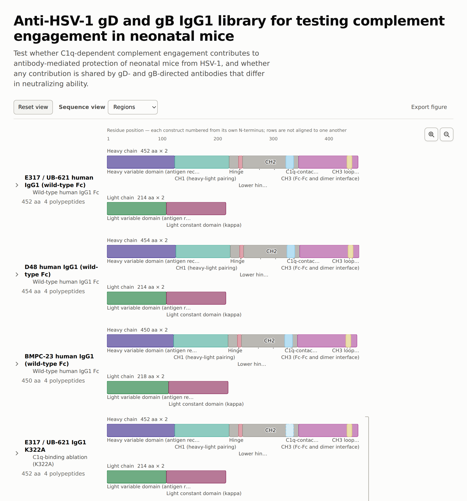

Construct Maps / Antibodies against HSV-1 and complement / Claude
Claude Sonnet 5.5 (high)
Does complement engagement contribute to protection by antibodies against HSV-1 in neonatal mice, and does it do so across antibodies?
10 constructs (6 candidates, 1 control, 3 references) · 2 hypotheses · 23 cited sources, 23 confirmed in Europe PMC

Objective
Test whether C1q-dependent complement engagement contributes to antibody-mediated protection of neonatal mice from HSV-1, and whether any contribution is shared by gD- and gB-directed antibodies that differ in neutralizing ability.
Hypotheses
- Does C1q binding by antigen-bound IgG contribute to protection of neonatal mice, with FcgR engagement and neutralization left intact, and is the contribution the same for each antibody?
- Is complement engagement limiting for these antibodies, so that promoting IgG hexamers on antigen raises protection, and does it do so equally for each?
Constructs
| Construct | Role | What it is |
|---|---|---|
e317-wt | reference | Wild-type human IgG1 Fc |
d48-wt | reference | Wild-type human IgG1 Fc |
bmpc23-wt | reference | Wild-type human IgG1 Fc |
e317-ka | candidate | C1q-binding ablation (K322A) |
e317-eg | candidate | Hexamer-promoting Fc (E430G) |
d48-ka | candidate | C1q-binding ablation (K322A) |
d48-eg | candidate | Hexamer-promoting Fc (E430G) |
bmpc23-ka | candidate | C1q-binding ablation (K322A) |
bmpc23-eg | candidate | Hexamer-promoting Fc (E430G) |
e317-lalapg | control | Fc-silenced anchor (LALA-PG) |